This is my game analysis of the game "TownSeek" DEVELOPER: Whales And Games; PUBLISHER: Super Rare Originals. Find this game on steam here! This game is a very cute ingie game where you explore the world, collect items, find landmarks, and trade with town merchants. The artwork in this game is amazing. I love the art style and how creative the characters and landmarks are made. There is much detail put into each aspect.

I really love how they named this landmark "happy tree" as it is painting as a tribute to bob ross. I thought that was a very creative touch to add and it made it have so much more charm.
When it comes to graphics, there are two different choices. You can make the graphics a chunky, more indie type of look or you can make them smooth. I like that they added this because you can personalize it to your liking. I enjoyed both of the different settings, the style of the game is so cute either way!
In the game, you interact with a couple of different things. First would be the towns, at the towns you are able to trade/sell/buy items from the specific merchant of each town. Second, you can fish or mine in their allotted areas to acquire items to trade or sell. Lastly, you can find little airships or boxes around the map that you can collect random items from.

When it comes to sounds and music, they complement the aesthetic of this game very well. They are best described as “brain-tingling”. Although they are cute little noises, they do not provide much particular function. No sounds provide clues to things around you, mostly just used for special effect.
There are 40 locations to discover, although the map is quite small and it only took me around 30 minutes to find all 40. There also aren’t many game settings, there are settings for music and volume, along with graphics and resolution.

You are only able to be one character which is like a floating ship in the sky. At each town you are able to buy a blimp that is customized to the town. That way you are able to customize your character in a way. I love the fact that they are specific to the town, it is such a cute touch to add.
Interactions with NPCs are not very complicated in this game. The only real interactions you have with NPCs are trading/buying/selling with the merchants in which they only say one sentence.
There are a couple of challenges this game gives you. Exploration is the first, finding all of the points to find on the map. Selling would be the second. Each town provides different prices for specific items which vary depending on the town. You make progress by finding areas, earning money, and buying and selling items.
This game is very fictional and therefore does not break the "fourth wall". Because of that, I do not think that the game reflects any cultural issues from our world due to it being very evenly distributed and fictional. There is not any unfairness in the game, most all of the towns hold an even amount of items and all have their specialties.
In the future I believe this game could develop quite a lot. It has a strong foundation and there are limitless possibilities that could be built off of it. I think the best developments that the game could have in the future would be creating a larger map or even another world that you can move onto. I also believe that the sense of purpose in this game is a little weak. There is not an extremely strong end goal. You simply explore, which does not capture attention too well in my opinion. In all I believe this game could grow into something really amazing. It is already such a good game, but has a lot of room for improvement.
Open my Townseek Kumu.io map in a new window!
Below are pictures of towns, merchant, objects, landmarks, and more from TownSeek!


 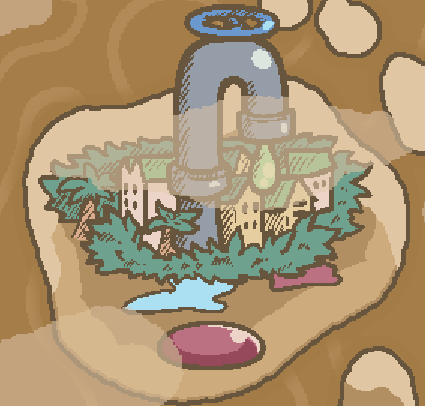
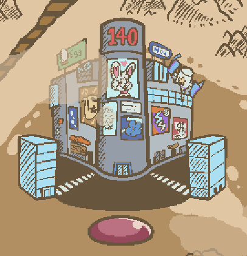
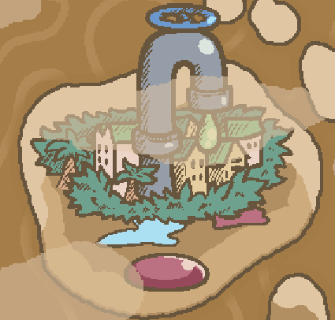
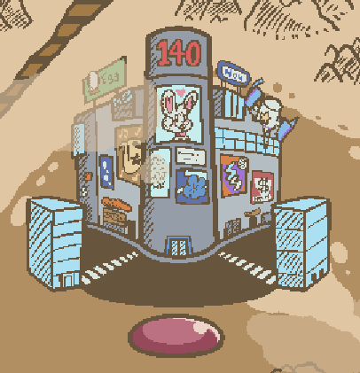
 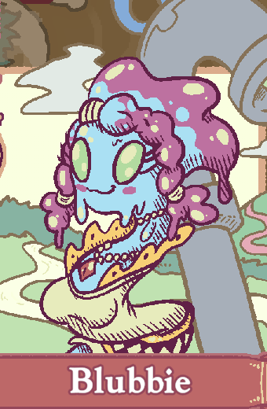
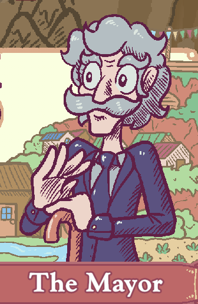
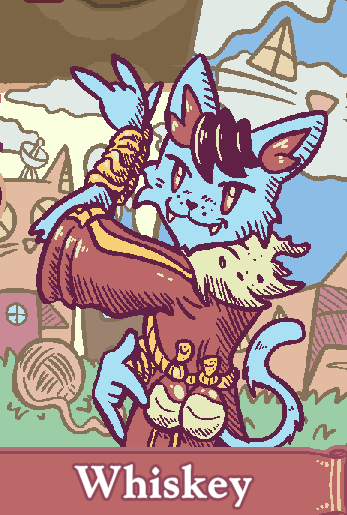
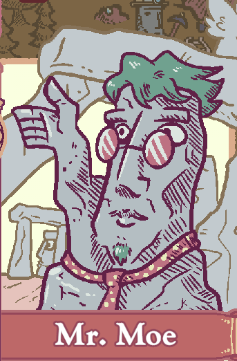
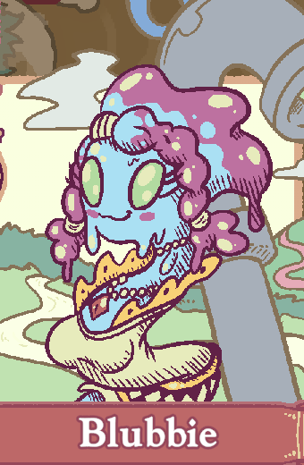
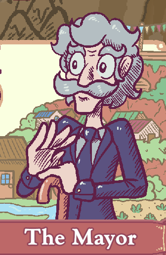
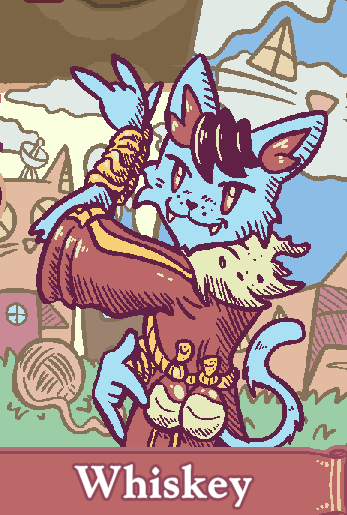
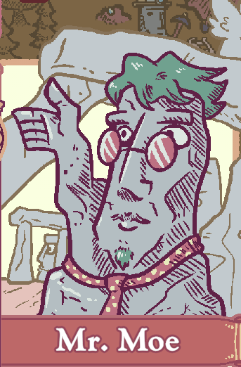
 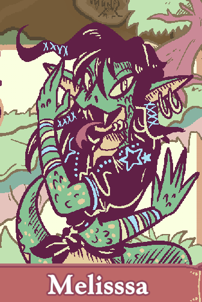
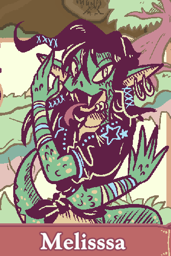


 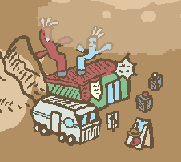
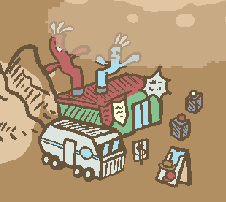
 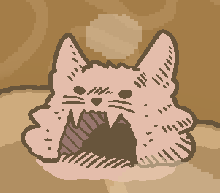
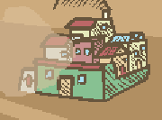
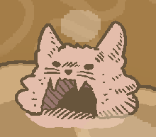
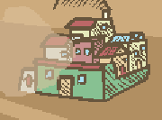


 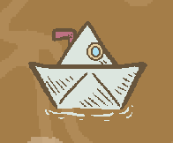
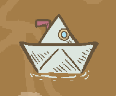

 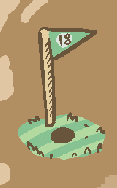
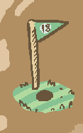

 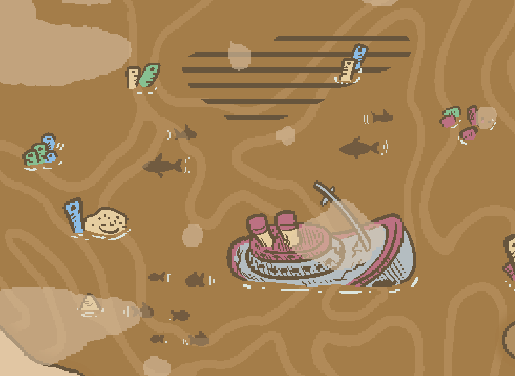
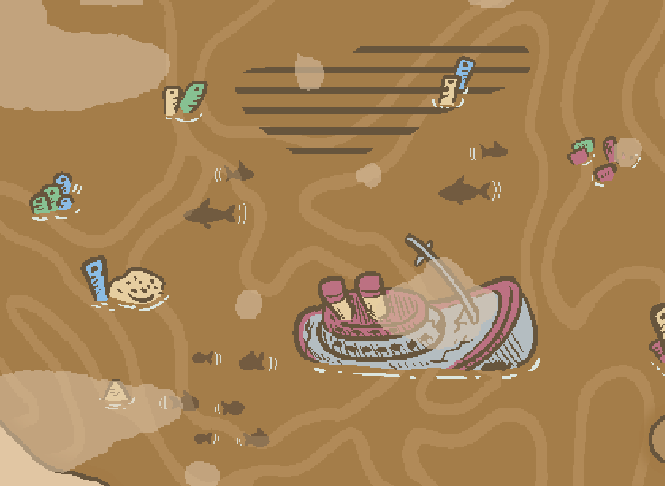

 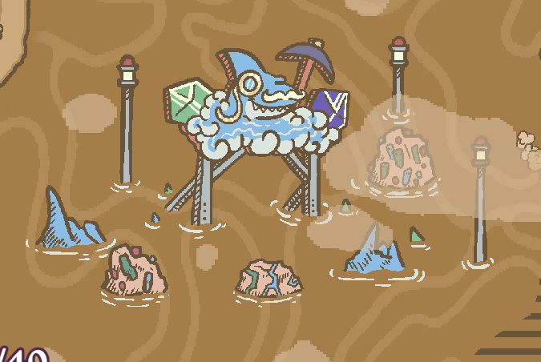
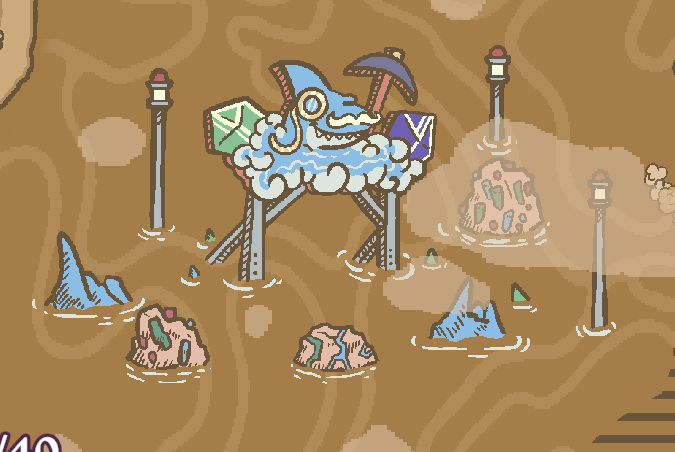